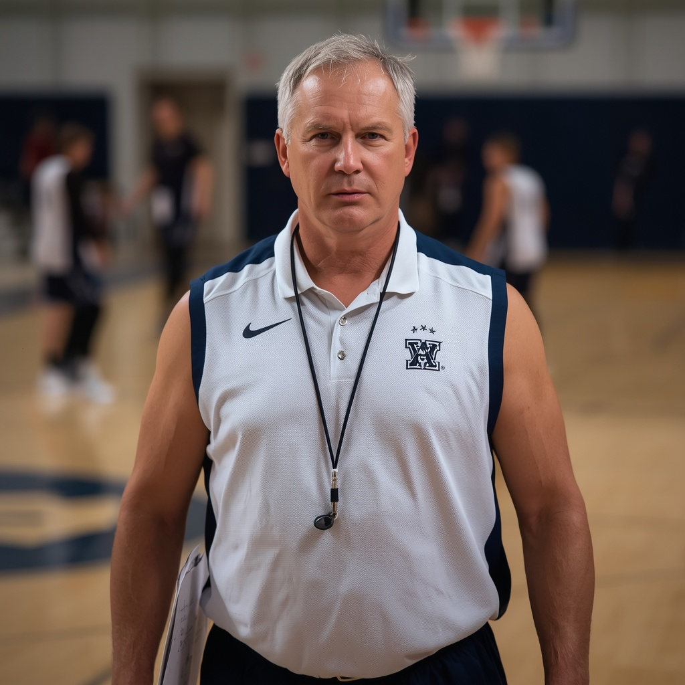
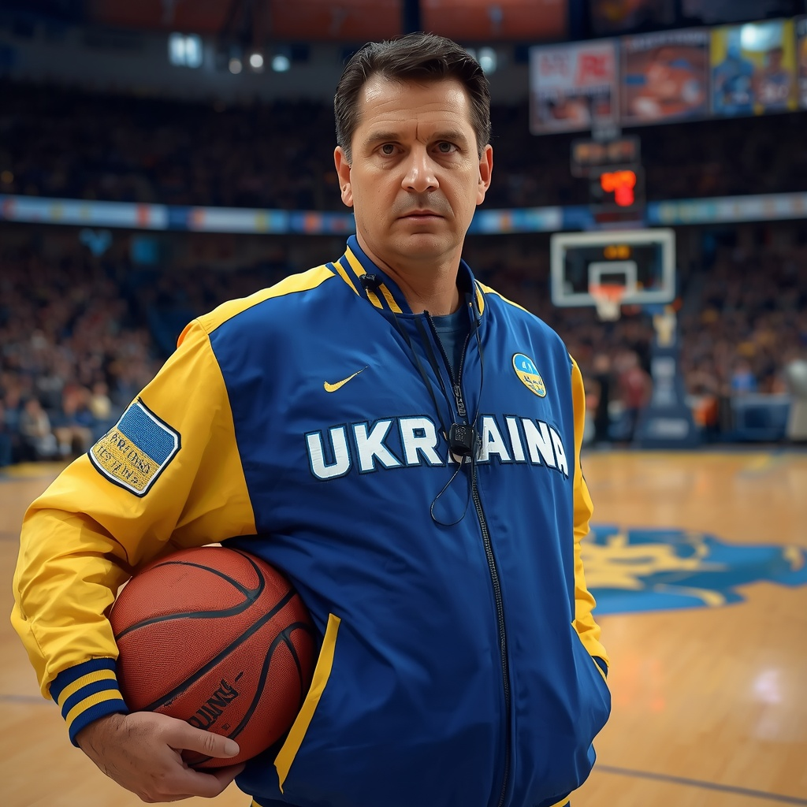
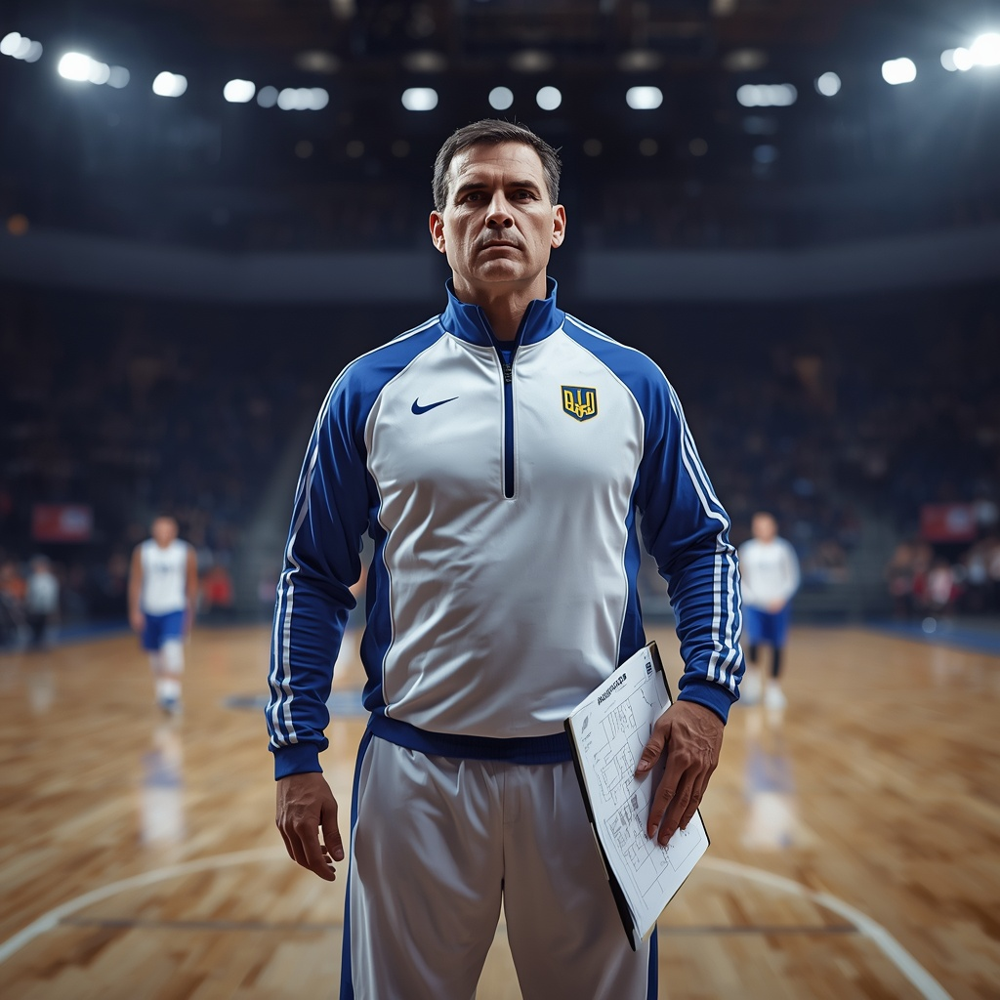
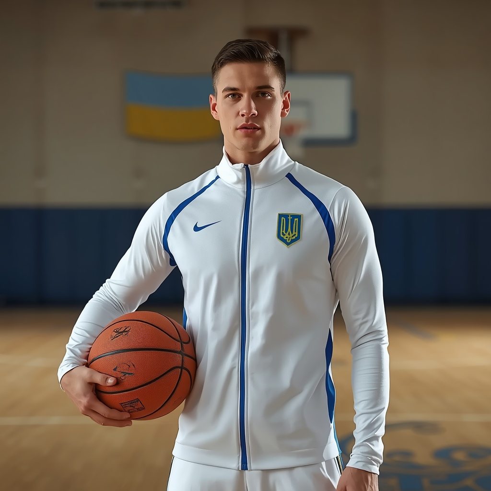
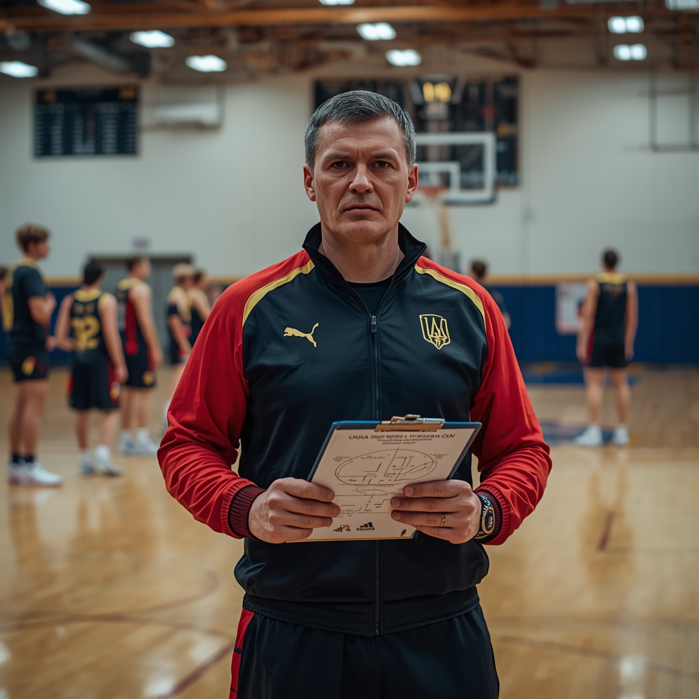
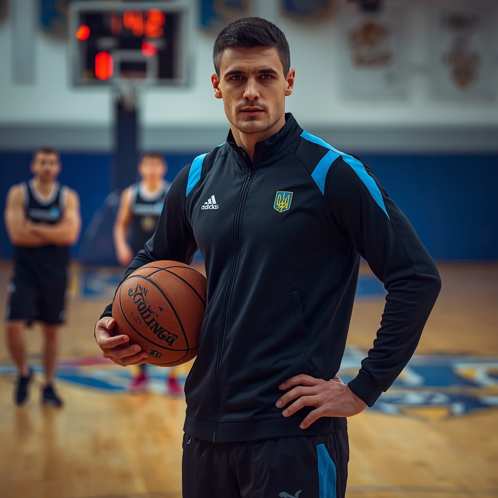

Баскетбол — один із найпопулярніших видів спорту, ним займаються понад 450 мільйонів людей. Правила зародилися в США 1891 року. Грають на майданчику 28 на 15 метрів, кошик — на висоті 3,05 м. Найпрестижніші турніри: Чемпіонат світу та НБА. Найкращі гравці в історії — Джордан, Браянт, Леброн. Матч обслуговують три арбітри, діє система відеоповторів. Гра розвиває швидкість, спритність і мислення.


Правила Гра триває 90 хвилин (2 тайми по 45 хв). Команда має 11 гравців, заміни — зазвичай до 5 за матч. Мета — забити м’яч у ворота суперника. Руками грати не можна (крім воротаря у штрафному майданчику). Поза грою (офсайд) — якщо атакуючий гравець ближче до воріт, ніж передостанній захисник, у момент пасу. Порушення (підніжка, удар, гра рукою) — штрафний або пенальті (з 11 м). Жовта картка — попередження, червона — вилучення. Аут вкидають руками з-за бічної лінії. Кутовий — якщо м’яч перетнув лінію воріт від захисника.

Сергій Бондаренко — Баскетбол. Досвід: 15 років. Спеціалізація: тактика, командний захист, аналіз суперника. Досягнення: майстер спорту, двічі чемпіон Вищої ліги як тренер. Про себе: «Будую залізобетонну оборону, яку не пройде жодна команда, та вчу читати гру».

Віталій Мазур — Баскетбол. Досвід: 14 років. Спеціалізація: підготовка до про-ліги, скаутинг, психологія. Досягнення: вивів 4 команди в професійний дивізіон, кращий тренер року 2024. Про себе: «Готую лідерів, які готові перемагати на найвищому рівні під шаленим тиском».

Андрій Блонський — Баскетбол. Досвід: 10 років. Спеціалізація: дриблінг, швидкісний прорив, індивідуальна техніка. Досягнення: ліцензія FIBA Coach, виховав 5 гравців для молодіжної збірної. Про себе: «Вчу контролювати м'яч як власну руку і впевнено обігрувати будь-якого захисника».

Артем Кравченко — Баскетбол. Досвід: 7 років. Спеціалізація: робота з центровими, гра під щитом, підбирання. Досягнення: екс-гравець Суперліги, вивів дитячу команду в топ-3 країни. Про себе: «Вчу домінувати в трисекундній зоні, закривати корпус і збирати всі відскоки».

Ілля Руденко — Баскетбол. Досвід: 4 роки. Спеціалізація: молодіжний баскетбол, швидкий прорив, координація. Досягнення: срібний призер студентської ліги, сертифікований тренер для юніорів. Про себе: «Даю драйвові тренування, прокачую швидкість на паркеті та допомагаю молодим гравцям повірити в себе».

Ігор Морозов — Баскетбол. Досвід: 9 років. Спеціалізація: тактика розігруючих, бачення майданчика, паси. Досягнення: ліцензія FIBA B, розробив авторську програму розвитку ігрового мислення. Про себе: «Вчу бачити паркет на 360 градусів і віддавати передачі, які вирішують долю матчу».

Максим Коваленко — Баскетбол. Досвід: 8 років. Спеціалізація: снайперська підготовка, техніка кидка, штрафні. Досягнення: сертифікований тренер НБА Кемп, кращий тренер з кидків у регіоні. Про себе: «Поставлю ідеальний кидок з будь-якої дистанції, мої вихованці забивають 9 з 10 триочкових».